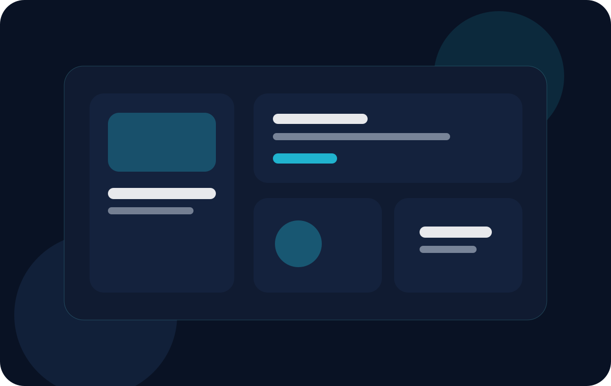

Competências principais
Pesquisa com usuários, arquitetura da informação, prototipação, testes de usabilidade e design visual.
UX/UI combina pesquisa, estratégia e design visual para criar produtos fáceis de entender, agradáveis de usar e coerentes com as necessidades das pessoas. É uma ponte entre objetivos do negócio e comportamento do usuário.

Pesquisa com usuários, arquitetura da informação, prototipação, testes de usabilidade e design visual.
Mapas de jornada, wireframes, protótipos, design systems, interfaces de alta fidelidade e documentação.
Produtos mais intuitivos, consistentes e alinhados às necessidades reais de quem utiliza a solução.
O processo fica mais forte quando começa entendendo pessoas, evolui com testes e termina em interfaces claras, acessíveis e coerentes com a marca.
Pesquisa de contexto, perfil de usuários, necessidades e principais dores na jornada.
Definição de fluxo, organização do conteúdo e prototipação das interações principais.
Construção da interface final com consistência estética, clareza e foco em acessibilidade.